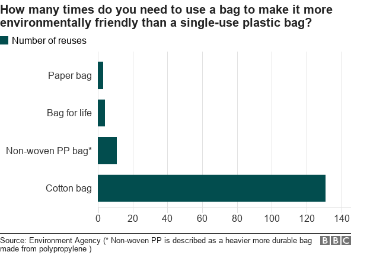

The three primary pillars of sustainability are Economy, Environment, and Society. Let’s see the perspective of the ban on single-use plastic based on these three pillars. The most common single-use plastics found are carry-bags, plastic drinking bottles, plastic bottle caps, food wrappers, plastic grocery bags, plastic sachets, and plastic wrappers for consumer goods. Here are some observations listed which depict the impact of it on various facets.
Observations Impact
Economy
India’s plastic processing units has an annual turnover of around Rs. 2.25 lakh crore according to India Plastic Manufacturers’ Association (AIPMA) Negative
The natural capital cost because of the pollution by Single-use plastic (SUP) is valued conservatively by the UN at $75 billion annually Positive
Big companies, malls may replace the plastics with applying charges for alternatives or can make it free, but for small retailers like Kirana store, Paan vendors, Vegetable vendors, etc. it is more comfortable and profitable to use SUP than others Negative
Environment
Unrecycled, uncollected plastics imposed a high threat to species at land and in water. (The river Ganga contains 1.15 lakh tonnes of plastics which has transferred to the ocean in the year 2015) Positive
Incineration and burning of the plastics generate air pollution and multiple diseases to living beings Positive
Energy and resource for making plastic become waste after it being singly used and comes out as trash. Positive
Alternative: Energy use to make paper bag during manufacturing is 4-times higher than the plastic bag. Paper bag requires cellulose for preparation which leads to cuttings of the trees Negative
Negative
Cotton bags manufacturing is highly carbon-intensive but provides more extended durability Positive and Negative (confused?)
Society
India’s plastic processing units give employment to 4 million people according to AIPMA Negative
Plastic is cheap, convenient and affordable to a greater extent Negative
Banning single used plastic will provide more research opportunity and innovation by society Positive
Support
Extended Producer Responsibility (EPR) mechanism in India is not much satisfactory and visible Positive
Table showing the economic, environmental, and social impacts

If we ignore the overall weightage of the positive and negative impacts of plastics and only count the effects shown in the above analysis, then we will find that the result is a bit skewed. So, which side do you prefer to go? How will banning implement? Is there any need to reshape the system instead of banning it altogether? A lot of questions will be running in your mind after reading this article. I am leaving it to you as a responsible citizen of this earth to think and make a sustainable decision for yourself and society.
An article by,
Ankush Kumar1 , Nandini Dixit2
Postgraduate student, IIT Bombay
Member of composting team, Team Zero Waste IIT Bombay
Contact me: ankushcuj23@gmail.com
References-
1.Seetharaman, G., 2020. Plastic Ban Impact On Industry: How Plastic Ban Will Affect Businesses And Consumers. [online] The Economic Times. Available at: https://m.economictimes.com/industry/indl-goods/svs/paper-/-wood-/-glass/-plastic/-marbles/how-plastic-ban-will-affect-businesses-and-consumers/articleshow/71236532.cms> [Accessed 26 August 2020].
2.Mehra, P., 2020. Plastic Ban Won’T Work, Reshaping Its Economics Will. [online] Livemint. Available at: https://www.livemint.com/news/india/plastic-ban-won-t-work-reshaping-its-economics-will-11570560332237.html> [Accessed 26 August 2020].
3.Edgington, T., 2019. Plastic or paper: Which bag is greener? [online] BBC News. Available at: https://www.bbc.com/news/business-47027792#:~:text=Despite%20its%20low%20durability%2C%20one,and%201%2C000%20years%20to%20decompose> [Accessed 26 August 2020].